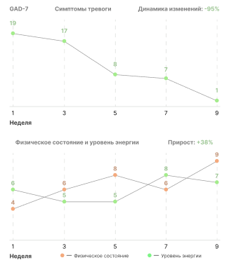
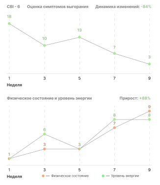
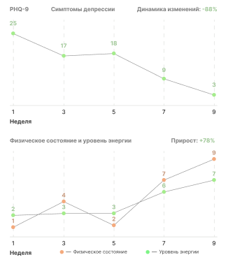

<section class="result">
  <div class="container">
    <h2 class="result__title">Результаты участников программ</h2>
    <div class="swiper result-swiper">
      <div class="swiper-wrapper">
        <div class="swiper-slide">
          <div class="swiper-slide-inner">
            <p class="swiper-slide-title">
              "Прийдя с тяжелой тревогой, усталостью и нарушениями сна, узнала,
              что страдаю еще и от выгорания. Благодаря программе и работе с
              психологом, смогла проработать негативные установки, повысила
              эмоциональную устойчивость и нормализовала самочувствие"
            </p>
            <span class="swiper-slide-descr">— Клиент Uwio</span>
          </div>
          
        </div>
        <div class="swiper-slide">
          <div class="swiper-slide-inner">
            <p class="swiper-slide-title">
              "3 месяца назад прошел программу. Пришел с выгоранием и
              проявлениями тревоги. Понравились как сессии с психотерапевтом,
              так и занятия между сессиями. стало больше энергии и общая
              эффективность."
            </p>
            <span class="swiper-slide-descr">— Клиент Uwio</span>
          </div>
          
        </div>
        <div class="swiper-slide">
          <div class="swiper-slide-inner">
            <p class="swiper-slide-title">
              "Пройти программу было лучшим для меня решением. За 9 недель я
              смог не только выйти из состояния полного упадка, но и освоить
              навыки, которые позволят обрести контроль над жизнью"
            </p>
            <span class="swiper-slide-descr">— Клиент Uwio</span>
          </div>
          
        </div>
      </div>
      <div class="swiper-pagination"></div>
    </div>
  </div>
</section>
